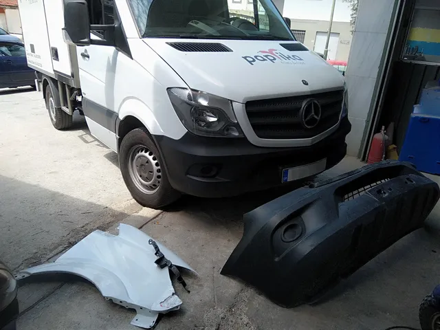

Φανοποιείο & Βαφές Αυτοκινήτων στον Βόλο
Στο φανοποιείο μας στη Β' ΒΙΠΕ Βόλου αναλαμβάνουμε την αποκατάσταση ζημιών αμαξώματος σε αυτοκίνητα, μοτοσυκλέτες, επαγγελματικά οχήματα και φορτηγά. Δουλεύουμε στην περιοχή από το 1990 και κάθε εργασία ξεκινά με εκτίμηση και φωτογράφιση της ζημιάς, ώστε να ξέρετε από την αρχή τι θα γίνει και με ποια σειρά.
Τι αναλαμβάνουμε
- Χτυπήματα και βαθουλώματα σε προφυλακτές, φτερά, πόρτες, καπό και πορτμπαγκάζ.
- Γρατζουνιές, εκδορές και ζημιές από επαφή σε παρκάρισμα, με τοπική ή ολική επισκευή.
- Ζημιές από σύγκρουση, όπου χρειάζονται επισκευή ή αντικατάσταση panel.
- Σκουριά σε παλιότερες επισκευές ή σε τμήματα που εκτίθενται στο αλάτι και την υγρασία.
- Τοποθέτηση φαναριών, προφυλακτήρων, καθρεφτών και εσωτερικών επενδύσεων.
- Επαγγελματικά οχήματα και στόλους εταιρειών, μοτοσυκλέτες και φορτηγά.
Πώς γίνεται η εργασία
- Εκτίμηση της ζημιάς και φωτογράφιση, ώστε να φαίνεται η κατάσταση πριν από κάθε εργασία.
- Συμφωνία για το τι θα γίνει: επισκευή του τμήματος ή αντικατάστασή του, και ποια μέρη χρειάζονται βαφή.
- Αποσυναρμολόγηση όσων τμημάτων χρειάζεται και επισκευή του αμαξώματος με τα εργαλεία που ταιριάζουν στη ζημιά.
- Προετοιμασία της επιφάνειας: τρίψιμο, αποκατάσταση και αστάρωμα, που είναι το στάδιο όπου κρίνεται η ποιότητα του τελικού αποτελέσματος.
- Βαφή σε φούρνο με ταίριασμα απόχρωσης, ώστε το χρώμα να μη διαφέρει από το υπόλοιπο όχημα.
- Συναρμολόγηση, ευθυγράμμιση αρμών, στιλβωση και τελικός έλεγχος πριν την παράδοση.

Ζημιά με εμπλοκή ασφαλιστικής
Αν η ζημιά καλύπτεται από ασφάλιση, δεν χρειάζεται να ασχοληθείτε εσείς με τη διαδικασία. Αναλαμβάνουμε τη φωτογράφιση, τα δικαιολογητικά και την επικοινωνία με την ασφαλιστική και τον πραγματογνώμονα, και σας ενημερώνουμε για τις εργασίες πριν ξεκινήσουν. Δείτε αναλυτικά τη διεκπεραίωση ασφαλιστικών υποθέσεων.
Πώς φτάνει το όχημα σε εμάς
Μπορείτε να έρθετε με το όχημά σας στη Β' ΒΙΠΕ Βόλου. Αν δεν είναι εύκολο - γιατί δεν κινείται με άνεση, ή επειδή δεν προλαβαίνετε - κάνουμε παραλαβή και παράδοση του οχήματος στον Βόλο και τη Νέα Ιωνία, δωρεάν και κατόπιν συνεννόησης.
Συχνές ερωτήσεις
Πόσο χρόνο θα μείνει το όχημα στο συνεργείο;
Εξαρτάται από την έκταση της ζημιάς και από τη διαθεσιμότητα των ανταλλακτικών. Μετά την εκτίμηση σας ενημερώνουμε για τη σειρά εργασιών, ώστε να ξέρετε από την αρχή σε τι να υπολογίζετε.
Επισκευάζετε ζημιά που έχει ξαναβαφτεί στο παρελθόν;
Ναι. Σε τέτοιες περιπτώσεις ελέγχουμε πρώτα την κατάσταση της παλιάς βαφής πριν την προετοιμασία, γιατί μια κακή παλιά επισκευή πρέπει να διορθωθεί πριν προστεθεί από πάνω καινούργια.
Κάνετε μόνο επισκευή, ή και βαφή;
Και τα δύο. Το φανοποιείο και το βαφείο είναι στο ίδιο συνεργείο, οπότε η επισκευή και η βαφή γίνονται χωρίς να μετακινηθεί το όχημα αλλού.
Χρειάζεται ραντεβού για εκτίμηση;
Μπορείτε να περάσετε, αλλά καλύτερα να τηλεφωνήσετε πρώτα στο 6947846531 ώστε να είμαστε διαθέσιμοι όταν φτάσετε και να σας δώσουμε εκτίμηση χωρίς αναμονή.
Αναλαμβάνετε επισκευές για εταιρικά οχήματα και στόλους;
Ναι. Αναλαμβάνουμε μεμονωμένα οχήματα και στόλους, με συνεννόηση για τη σειρά των εργασιών ώστε να μη μένει η επιχείρηση χωρίς οχήματα.